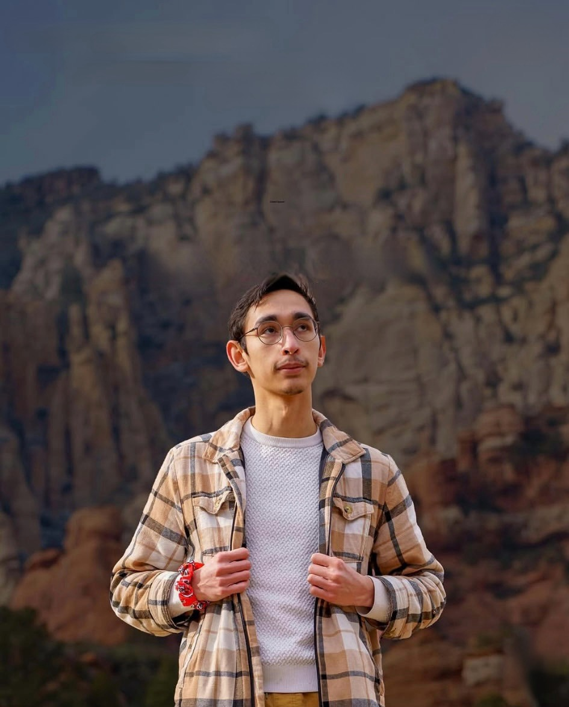
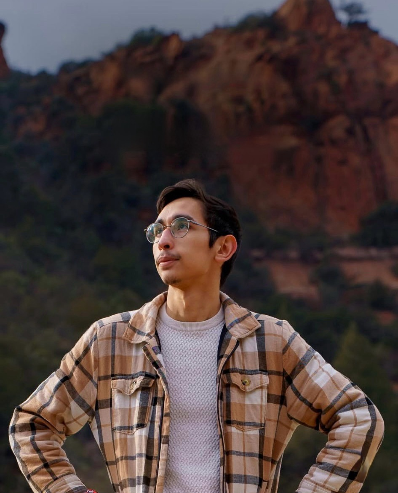

What started as simple curiosity behind a camera quickly became a true passion for me. Over the past few years, through hands-on shoots and creative exploration, I discovered not just a love for photography and videography, but a deep appreciation for storytelling through visuals. I'm drawn to the moments that can't be staged — the genuine smiles, the subtle glances, the raw emotion in between poses. My goal is to create images and films that feel authentic, timeless, and personal. For me, every session is more than just capturing content; it's about preserving memories and telling stories that deserve to be remembered.
Photography and videography are more than just cameras and editing — they're about perspective, emotion, and connection. A single frame has the power to freeze time, while a short film can relive it. I believe visual art is about noticing the details others might miss — the light at golden hour, the movement in a quiet moment, the energy of a celebration. Through intentional composition, lighting and storytelling, I aim to create work that not only looks beautiful, but feels meaningful.
